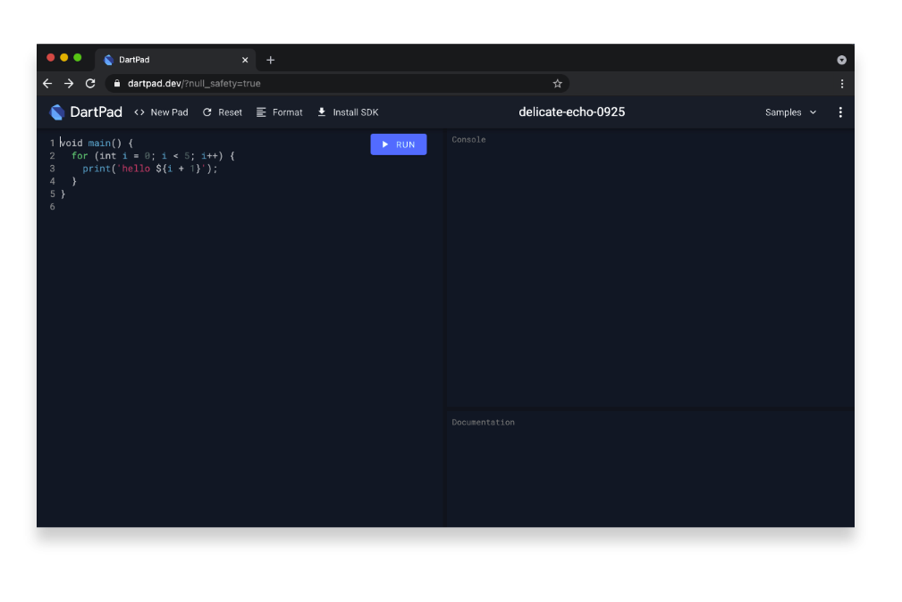

What You'll Build in this Workshop:
- A simple 3-page Flutter Application / Paradise (Splash Page, Landing Page, List Page)
- Create Flutter User interfaces with ease
- Common Flutter Layout strategies using just core widgets
- Creating custom Flutter widgets and achieve widget composition
- Creating Dart models to mock up app data
- Import network images
- Using Material Icon fonts
- A computer with a browser
- An internet connection
For the Coding Roulette Session:
- We'll be using LiveShare, a web-based VS Code plugin for real-time collaborative development.
DartPad will be our Flutter development editor, so let's set it up for that.
First, go to a browser and launch dartpad.dev. Your browser should look as follows:

Setting up DartPad for Flutter Development
By default, DartPad is set up for Dart development. For Flutter development, do the following steps:
- From the top menu, select New Pad.

- If prompted to discard changes of the current pad, click OK.

- From the New Pad dialog, select Flutter. Click Create.

You should be all set! Now you're ready to start coding in Flutter right from your browser. If you hit the Run button, you will see the generated output on the right panel.

Are you ready? Let's go to the next step!
For the initial page in this application, we'll be building the Splash Screen.
This is what we'll be accomplishing in this codelab:
Splash Screen and its widget composition
The following illustration shows a schematic view of the widget composition we'll accomplish while building the layout for our splash screen widget:
Start Coding the App
Let's start coding this application from scratch. Remove all code from the editor and leave just the following code:
import 'package:flutter/material.dart';
void main() {
// TODO: more code here later
}
We are importing the Material Library Flutter package and like every Flutter app, the main entrypoint is the main method. Inside this method is where things kick off. We'll get back to this point in a minute.
Inside the main method, add the following code:
// add this code inside your void main():
runApp(
MaterialApp(
debugShowCheckedModeBanner: false,
home: SplashPage()
)
);

The runApp method is part of the Flutter framework and is in charge of mounting the root widget on the widget tree. We create the first widget (MaterialApp) which represents the application's root widget.
We disable the debugging sash by setting the debugShowCheckedModeBanner to false, and set the home property of the MaterialApp widget to be our SplashPage widget, which we'll create in a moment.
Let's create the SplashPage Widget.
Right under the main method, create a StatelessWidget called SplashPage. We create it as Stateless since we won't be maintaing state. More info on StatelessWidgets here.
Since every widget has a build method, add one, and return an empty Stack widget. We use a Stack mostly to add widgets one on top of each other, in a stack fashion. We'll be adding the background color container, icon and the linear progress indicator as children of the Stack widget, but with different alignments.
Under the import statement, right above the main method, add the following line:
const Color mainThemeColor = Color(0xFF272D8D);
We want to use this mainThemeColor property throughout our application and don't want to repeat ourselves, hence holding on to this value on this global property.
As the first child of the Stack widget, let's add a Container widget, and apply the main theme color as its background color.
Proceed to add more children to the Stack widget - in our case, let's add an Icon widget, with a specific icon (Icons.pool) and aligned at the center of the stack using an Align widget with the Alignment.center set to it. Add a white color to it and a size of 80px:
Add the third child to the Stack widget - the LinearProgressIndicator widget. This is a handy widget as it shows a spinning circle that you can use for indicating an ongoing process. Set its valueColor property to AlwaysStoppedAnimation(Colors.white) so it shows white, but with a 50% opacity (0.5).
We want to show it aligned to the bottom of the stack, so wrap it inside another Align widget, with an alignment: property set to Alignment.bottomCenter. By now, your code should look as follows:
If you hit Run on DartPad, your app preview should look like this:
So far so good! Now I'll show you how to make a truly functional splash screen in the next step.
Now that we have our Splash Page almost ready, let's create the shell of the page that the Splash Page widget will navigate to after we simulate a short delay (i.e. fetching data from a backend, performing some process prior entering the app, etc.).
Create another class under the Splash Page widget called ListPage. This will represent the list page where we'll display the app's content as a list. For now let's put dummy content just to test the Splash Page. In the next codelab we'll flesh it out more:
So what we'll do now is simulate a delay in the Splash Page, then navigate to our list page. For that we'll make use of a Future, which is an object that represents a delayed computation. More on Futures here.
Back in our Splash Page widget, let's add a Future, and use one of the provided methods called delayed. This method takes a duration, and a callback, which gets executed once the duration (or delay) has ellapsed. We'll set a duration of 2 seconds, and when this time has ellapsed, it will execute our callback, which in turn will perform a Navigation to our list page.
Add a Future.delayed inside the SplashPage widget's build method, right above the return statement, as such:
Let's dissect this code. Future.delayed takes two parameters: a Duration object with is seconds property set to 2, and a callback. When the 2 seconds have ellapsed, it will call the callback.
The callback has inside a trigger to perform a navigation. We use Navigator.of to push a new route to the global navigation stack, using the BuildContext context to retrieve the closest navigator in the hierarchy, in our case, the one available by default from the MaterialApp. We use a MaterialPageRoute to wrap the widget we want to navigate to, in our case the ListPage widget created earlier.
Now, let's take our current implementation for a spin with what we have so far.
In DartPad, click Run. After a 2 seconds delay, you should see the SplashSpage widget slide out of view and sliding in comes the ListPage widget, which will be our landing page for now.
Congrats in making it this far! In this codelab, we accomplished the following:
- Performed the initial setup of our DartPad environment
- Created our initial boilerplate startup code
- Created a SplashScreen widget with core widgets
- Created a dummy landing page (ListPage) for the SplashPage widget to navigate to
- Introduced Futures to add a small delay before proceeding further
- Tapped into the navigation capabilities of Flutter
In the next codelab, we'll flesh out the ListPage widget and learn more about creating custom widgets. See you there!
Please don't forget to follow me on social media:
- On Twitter (@drcoderz)
- On YouTube (Roman Just Codes)
- On My Personal Portfolio
- On Medium
- On LinkedIn
In case you fell behind on this codelab, below is the whole code for this codelab in a way you can copy / paste directly into DartPad:
import 'package:flutter/material.dart';
const Color mainThemeColor = Color(0xFF272D8D);
void main() {
runApp(
MaterialApp(
debugShowCheckedModeBanner: false,
home: SplashPage()
)
);
}
class SplashPage extends StatelessWidget {
@override
Widget build(BuildContext context) {
Future.delayed(const Duration(seconds: 2), () {
Navigator.of(context).push(
MaterialPageRoute(builder: (context) => ListPage())
);
});
return Stack(
children: [
Container(
color: mainThemeColor
),
Align(
alignment: Alignment.center,
child: Icon(
Icons.pool,
color: Colors.white,
size: 80
)
),
Align(
alignment: Alignment.bottomCenter,
child: LinearProgressIndicator(
valueColor: AlwaysStoppedAnimation<Color>(
Colors.white.withOpacity(0.4)
)
)
)
],
);
}
}
class ListPage extends StatelessWidget {
@override
Widget build(BuildContext context) {
return Scaffold(
body: Center(
child: Text('Hello Paradise!'),
)
);
}
}